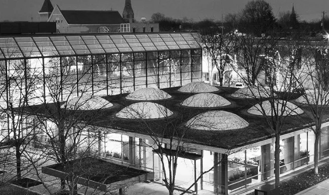

Irwin Union Bank
En savoir plus
La Gateway Arch est un monument de 630 pieds (192 mètres) situé à Saint-Louis, Missouri, aux États-Unis. Il s'agit du plus haut monument artificiel du continent américain et de la plus haute arche du monde. L'arche se trouve sur la rive ouest du Mississippi, à quelques kilomètres en aval de sa confluence avec le Missouri. Elle est en acier inoxydable et est en forme d'une grande lettre « S ». La Gateway Arch a été conçue par Eero Saarinen et a été inaugurée le 26 juin 1963. Il s'agit d'un mémorial à l'expansion vers l'Ouest des États-Unis et est officiellement dédié aux « Américains ». L'arche est une destination touristique populaire et l'un des symboles les plus reconnaissables des États-Unis. Il existe deux façons de visiter la Gateway Arch : en prenant un tram jusqu'au sommet ou en marchant le long de l'arche elle-même. Les tramways mettent environ 4 minutes pour atteindre le sommet de l'arche et offrent des vues imprenables sur la ville de Saint-Louis et le fleuve Mississippi. La marche jusqu'au sommet de l'arche prend environ 30 minutes et est un excellent moyen de faire de l'exercice et de profiter de l'air frais.